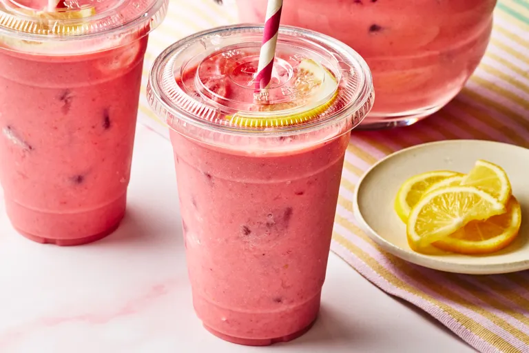

This creamy strawberry lemonade has only 3 ingredients, plus ice and water. Keep lemons and frozen strawberries on hand, and sweetened condensed milk in the pantry, and you can enjoy this treat all summer.
Process strawberries, unpeeled lemons, water, ice, and sweetened condensed milk in a blender until smooth and creamy, 1 to 2 minutes. Divide among ice-filled glasses. Garnish each with a lemon slice. Serve immediately.
Serve and enjoy!